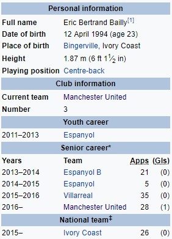

Ерик Баји
Ериk Бертранд Бaji (рођен 12. априла 1994. године) је професионални фудбалер из Обале Слоноваче који игра за енглески клуб Манчестер Јунајтед и националну екипу Обале Слоноваче. Углавном централни дефанзивац, он такође може играти као десни бек. Баји је започео своју професионалну каријеру у шпанском Еспањолу, пре него што је прешао у Виљареал. Провео је две сезоне у клубу, пре потписивања за Манчестер Јунајтед у јуну 2016. године. Имао је свој међународни деби за обалу Слоноваче у 2015. години и помогао им да освоје Афрички куп нација.
